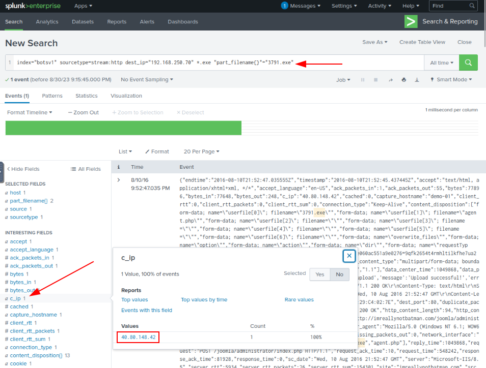
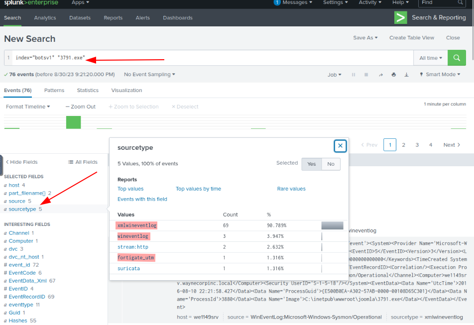
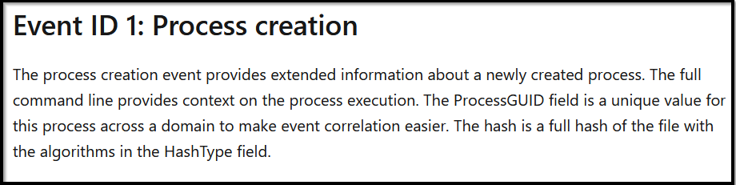
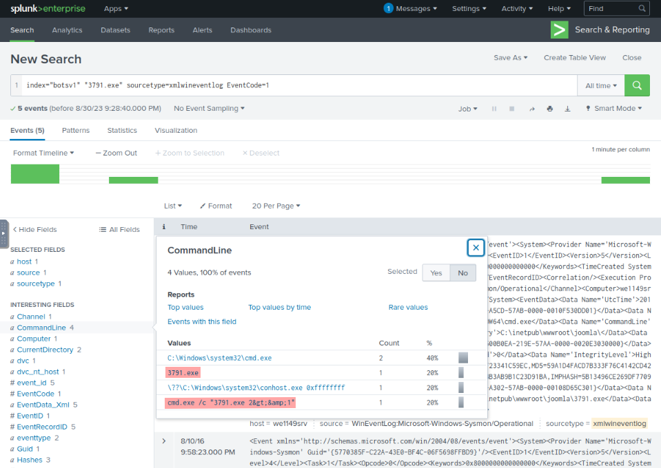
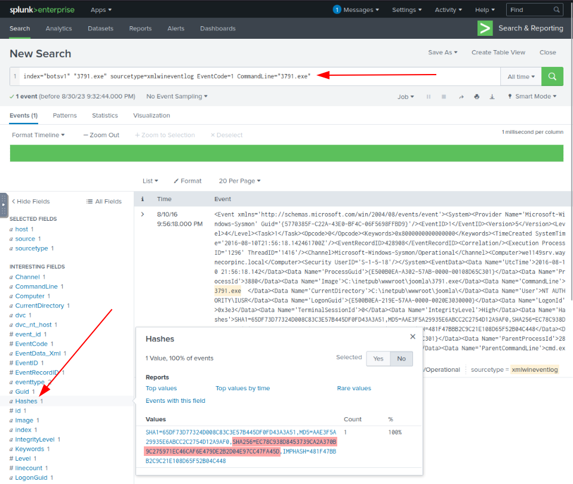
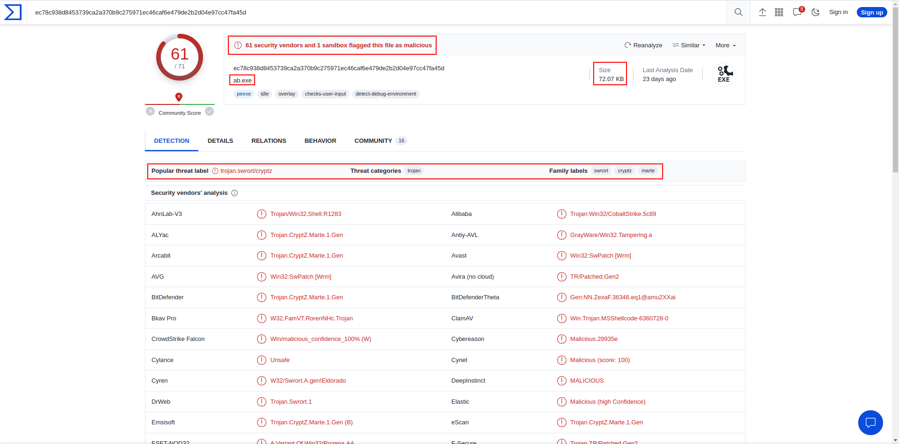
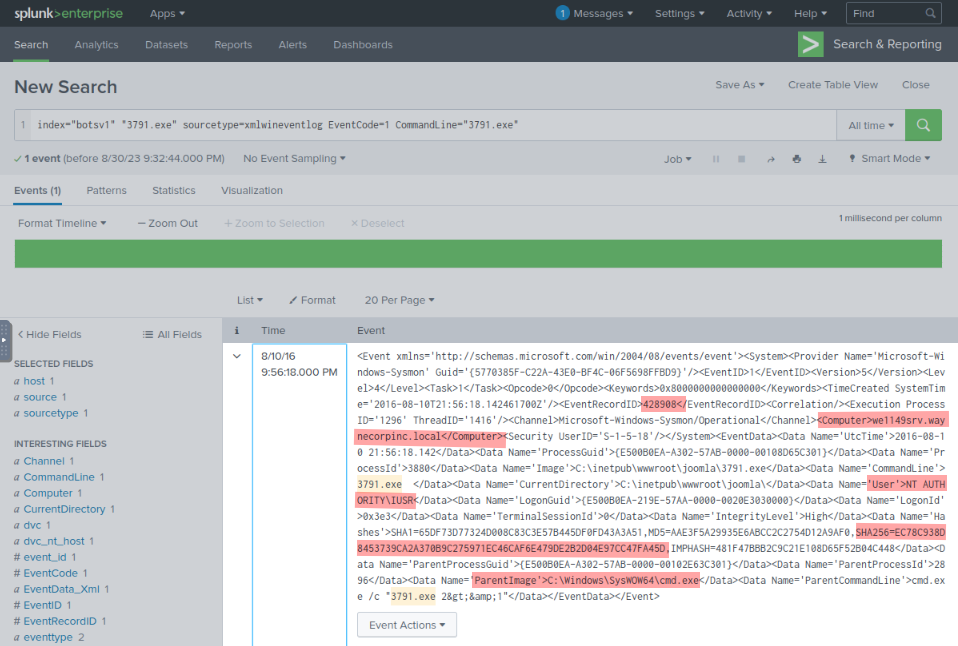

In the previous Exploitation phase, we found evidence of the webserver iamreallynotbatman.com getting compromised via brute-force attack by the attacker using the python script to automate getting the correct password. The attacker used the IP" for the attack and the IP to log in to the server. This phase will investigate any payload / malicious program uploaded to the server from any attacker's IPs and installed into the compromised server.
To begin an investigation, we first would narrow down any http traffic coming into our server 192.168.250.70 containing the term ".exe". This query may not lead to the findings, but it's good to start from 1 extension and move ahead.
Search Query:
index=botsv1 sourcetype=stream:http dest_ip="192.168.250.70" *.exe
With the search query in place, we are looking for the fields that could have some values of our interest. As we could not find the file name field, we looked at the missing fields and saw a field part_filename{}.
Observing the interesting fields and values, we can see the field part_filename{} contains the two file names. an executable file 3791.exe and a PHP file agent.php
Next, we need to find if any of these files came from the IP addresses that were found to be associated with the attack earlier.
Click on the file name; it will be added to the search query, then look for the field c_ip, which seems to represent the client IP.
Search Query:
index=botsv1 sourcetype=stream:http dest_ip="192.168.250.70"
"part_filename{}"="3791.exe"

Was this file executed on the server after being uploaded?
We have found that file 3791.exe was uploaded on the server. The question that may come to our mind would be, was this file executed on the server? We need to narrow down our search query to show the logs from the host-centric log sources to answer this question.
Search Query:
index=botsv1 "3791.exe"

Following the Host-centric log, sources were found to have traces of the executable "3791.exe".
• Sysmon
• WinEventlog
• fortigate_utm
For the evidence of execution, we can leverage sysmon and look at the EventCode=1 for program execution.
Reference: https://docs.microsoft.com/en-us/sysinternals/downloads/sysmon

{kind=link}
Search Query:
index=botsv1 "3791.exe" sourcetype="XmlWinEventLog" EventCode=1

Examining the output, it becomes evident that this file was executed on the compromised server. Additionally, Sysmon captures the hash value of the created processes, and obtaining the SHA256 hash will be immensely valuable.

This is because a hash serves as a distinctive identifier for a file, enabling us to harness the capabilities of VirusTotal and confirm whether the executable is malicious or not.

By executing a straightforward query in VirusTotal, we can ascertain several key details about the file. This includes its associated name, which is "ab.exe", its size of "72.07KB", and we can also retrieve information indicating that 61 security vendors and 1 sandbox have identified this file as malicious. This confirms our suspicions provides us with additional intel.
Sysmon showcases even more information, but we have to draw a line between what is good information and what is information we need. Bellow you have a sneek peek of more Sysmon information.

We looked at the installation phase to see any executable from the attacker's IP Address uploaded to our server.
Findings:
User that executed the program 3791.exe on the server:• NT AUTHORITY\IUSR
Uploaded Files:
• Executable file "3791.exe"
• SHA256 Hash Value: ec78c938d8453739ca2a370b9c275971ec46caf6e479de2b2d04e97cc47fa45d
VirusTotal Analysis:
• File Name: "ab.exe"
• File Size: 72.07KB